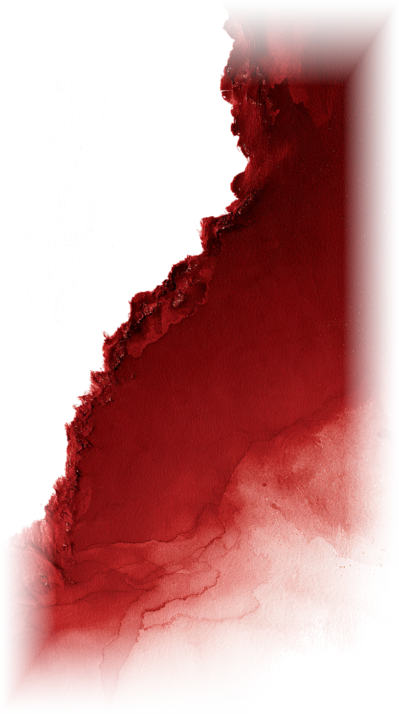
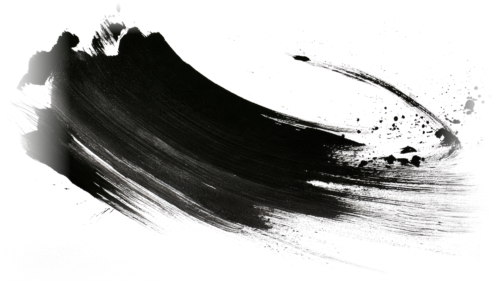
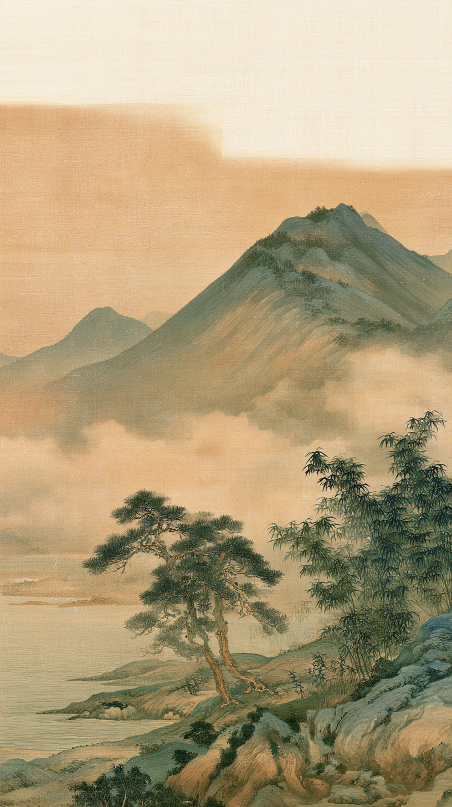
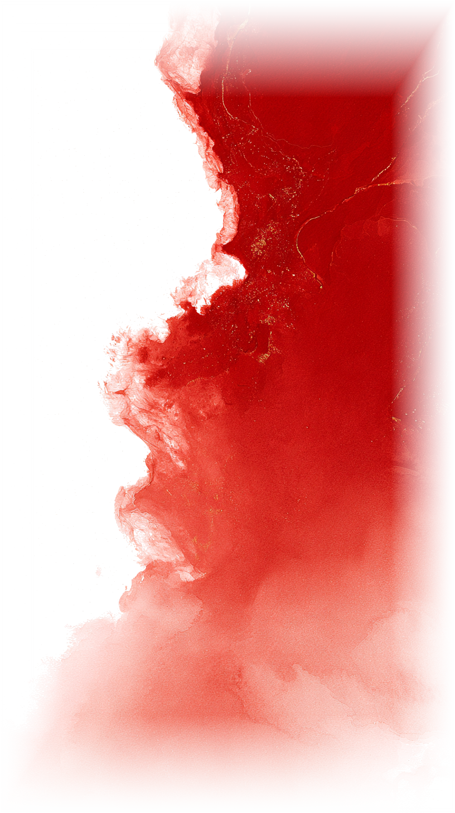
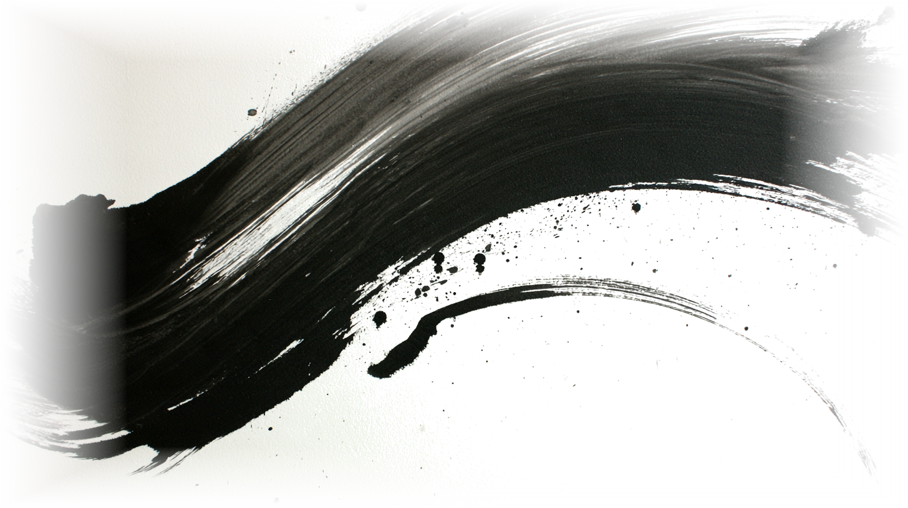
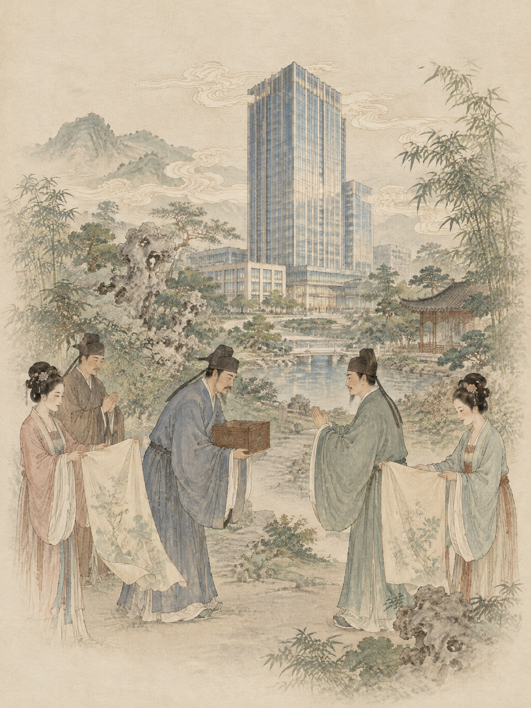
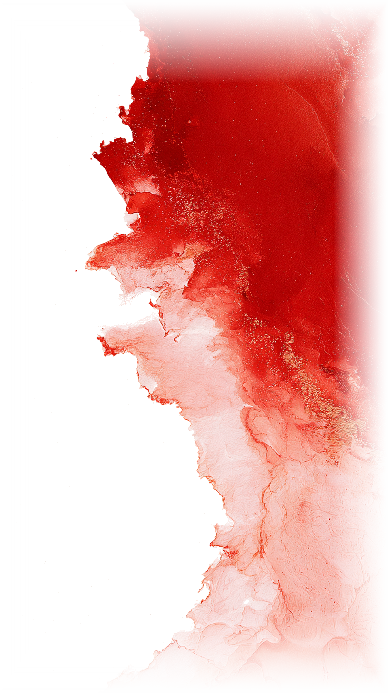
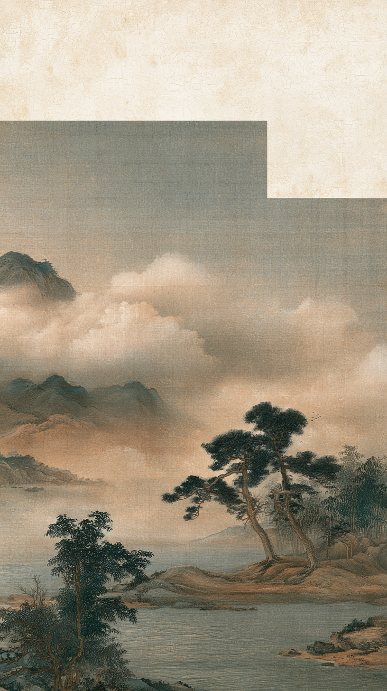

6 月 5 日，集团乔迁盛典暨品牌焕新发布会在杭州华润杭曜置地中心举行，政府领导、合作伙伴、媒体代表与集团同仁齐聚见证。董事长吴小波表示，购置杭州核心商圈自持总部物业，是集团深耕美丽时尚产业和国潮赛道的战略举措，为未来十年发展筑牢战略底座，也有助于优化资产结构、提升抗风险能力并预留拓展空间。

同步启动的品牌焕新聚焦宋韵根脉与竹魂精神，常务副总经理鄢克亚系统解读全新品牌体系，定制丝巾、小丽 IP 限定手办等伴手礼成为文化载体；新总部以 "空间即平台" 理念打造潮启、潮力、潮行、潮星、潮聚五大板块，构建 "文化为魂、科技为翼、平台为基" 的国潮产业生态。乔迁与焕新，一为安身立命之基、一为文化灵魂之塑，自持总部是集团对国潮事业的长期主义承诺，品牌焕新则让宋韵竹魂成为贯穿商业运营与传播表达的精神主线，为集团从 "商业运营者" 向 "文化传播者" 的跃迁写下注脚。